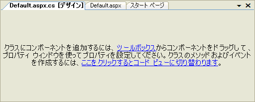

| はじめに > コンポーネントをプロジェクトに組み込む方法 |
Visual Studio では、ツールボックスにコンポーネントを追加しただけでは、プロジェクトにコンポーネントを追加したことにはなりません。プロジェクトの参照設定へ追加された時点でコンポーネントが組み込まれます。
以下のいずれかの操作を行うとプロジェクトへコンポーネントが組み込まれます。
プロジェクトに組み込まれているコンポーネントの一覧は、ソリューションエクスプローラで確認できます。また、各コンポーネントが使用している DLL もソリューションエクスプローラに登録される場合があります。詳細については、Visual Studio の製品ヘルプを参照してください。
本製品で使用しているコンポーネントの一覧を以下に示します。
| ファイル | 内容 |
|---|---|
| C1.C1Pdf.4.dll | 本体アセンブリ（※） |
| C1.C1Pdf.4.Design.dll | デザイナアセンブリ（※） |
※ .NET Framework 4 以上でご利用いただけます。
以下に、C1Pdf コントロールをツールボックスに追加し、フォームに配置する方法を示します。これにより、コンポーネントがプロジェクトに組み込まれます。
配置手順
